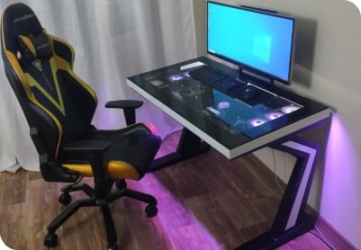
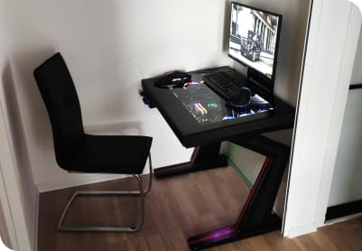
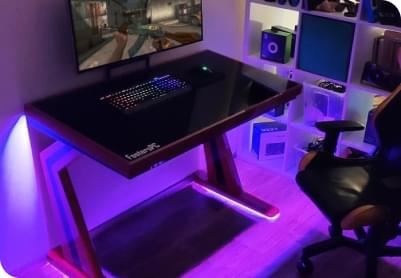

Nasze zrealizowane projekty
Przedstawiamy poniżeni najlepsi nasi projekty

Standardowa wersja
Pierwszy projekt firmy "FostersPC" który został zaprojektowany w 2019 roku. W następnym roku specjaliści stworzyli biurko, w które umieszcza się
komputer z dowolnymi komponentami. Biurko zapewnia przyjemność pod czas gry oraz zwykłego korzystania z komputera.
Zamów

Mini wersja
Mini wersja standardowej wersji biurka powstała podczas realizacji zamówienia klienta z Moskwy. Biurko powinno było zostać instalowane w pomieszczeniu
szerokość którego, jest mniejsza od szerokości standardowej wersji. Biorąc pod uwagę komponenty, które zostały wybrane przez klienta, było zdecydowano zmniejszyć
szerokość biurka, do maksimum. Przez kilka nieudanych prób, udało się umieścić wszystkie komponenty w biurku, szerokość którego, zmniejszyła się do 70 cm.
Zamów

Wersja z podświetliaczem
Wersja z podświetlaczem jest małą modyfikacją standardowej wersji biurka. Jak widać na zdjęciu, w nóżkach biurka zostały zamontowane światła LED, z możliwością
przełączenia kolorów. Taka wersja jest idealnym rozwiązaniem, kiedy chcesz podziwiać lub zaskoczyć swoich kolegów.
Zamów